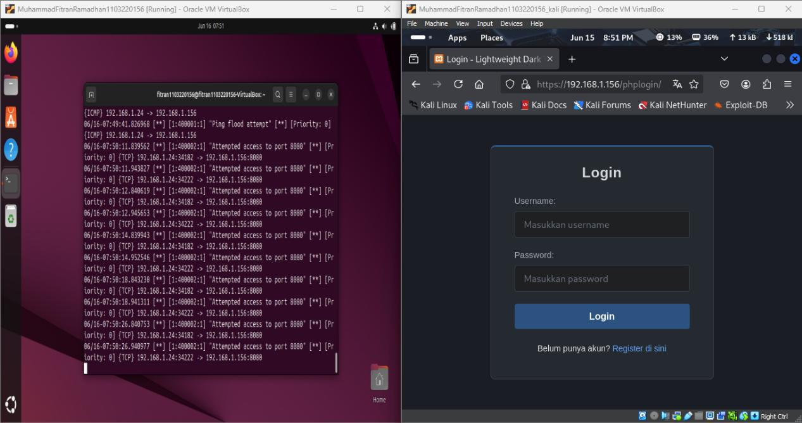
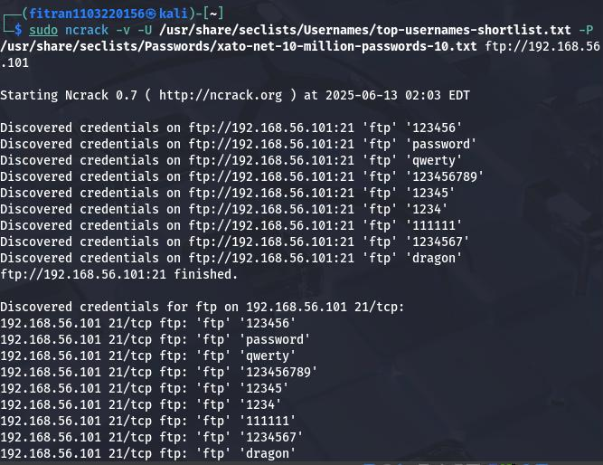

Security System: Penetration Testing and Defense
A multi-layered defense-in-depth framework featuring secure HTTPS server configurations, Network Intrusion Detection System (Snort 3), firewall policies, and penetration testing simulation & mitigation.
Hardware & Tech Stack
Skills & Competencies
The Threat Landscape
Modern Linux server installations are highly susceptible to targeted attacks if left in their default states. Vulnerabilities like cleartext FTP services, misconfigured Network File System (NFS) root shares, and open backdoors (such as bindshell on port 1524) are trivial for threat actors to exploit. Without encrypted protocols (HTTPS), traffic sniffing can expose user credentials, and without active intrusion detection, automated network scanning and Denial of Service (DoS) attacks can go completely unnoticed.
The Defense-in-Depth Solution
A comprehensive, multi-layered security framework is implemented. Netplan is configured to secure static virtual networks. OpenSSL generates custom 2048-bit RSA self-signed certificates to secure Apache web servers via HTTPS. A Network Intrusion Detection System (Snort 3) is compiled from source and integrated with custom rules to capture real-time threat vectors (like Ping Floods and Port Scanning). Finally, Uncomplicated Firewall (UFW) rules block alternative ports and rate-limit SSH traffic, while Fail2ban auto-bans brute force agents.
1. Virtual Network & Environment Setup
To establish a stable and realistic environment for security simulations, the Virtual Machine (VM) host utilizes a Bridged Adapter interface. This exposes the target host directly to the local physical router, assigning a static IP address using Netplan to ensure consistent connections.
VM System Parameters
- OS Environment: Ubuntu Desktop (target) & Kali Linux (attacker).
- Hypervisor: Oracle VM VirtualBox.
- Network Interface: Bridged Adapter connected to host Wi-Fi/Ethernet.
- Minimum System Specs: 3 CPU Cores, 5000 MB RAM, 20 GB Storage.
Netplan Static Configuration
Saved at /etc/netplan/01-network-manager-all.yaml:
# Configure static IP interface
network:
version: 2
renderer: NetworkManager
ethernets:
enp0s3:
dhcp4: no
addresses:
- 192.168.1.156/24
nameservers:
addresses:
- 8.8.8.8
- 1.1.1.1
routes:
- to: 0.0.0.0/0
via: 192.168.1.12. Database & Secure Web Server Configuration
Enforcing secure HTTP exchanges is critical to protect sensitive authentication data. We configured a self-signed SSL certificate using OpenSSL on an Apache server (XAMPP environment) to ensure all authentication traffic is fully encrypted.
Database Initialization (SQL)
Creates a secure table framework storing password credentials alongside salt keys for enhanced hashing resilience:
CREATE DATABASE phplogin; USE phplogin; CREATE TABLE accounts ( id INT AUTO_INCREMENT PRIMARY KEY, username VARCHAR(255) NOT NULL UNIQUE, password VARCHAR(255) NOT NULL, email VARCHAR(255), fullname VARCHAR(255), pass_salt VARCHAR(64) );
OpenSSL Certificate Generation
Generates a 2048-bit RSA private key and self-signed certificate valid for 365 days, specifying the server IP as Common Name:
# Generate SSL key and certificate
sudo openssl req -x509 -nodes -days 365 -newkey rsa:2048 \
-keyout /opt/lampp/etc/ssl.key/server.key \
-out /opt/lampp/etc/ssl.crt/server.crt
# Certificate Parameters:
Country Name: ID
State or Province Name: Banten
Locality Name: Tangerang
Common Name: 192.168.1.1563. Firewall & NIDS (Snort 3 & UFW)
Intrusion detection systems analyze packet payloads in real time. In this setup, Snort 3 is compiled from source alongside libdaq and gperftools. A customized policy identifies packet rate abuses and scanning behaviors, working alongside UFW Firewall rules.
Custom Threat Detection Rules
Saved at /usr/local/etc/snort/local.rules to flag Ping Flood spikes and port scanning targeting alternative ports:
# Detect Ping Flood (ICMP Echo Request > 20 in 10s from same IP)alert icmp any any -> $HOME_NET any ( msg:"Ping flood attempt"; itype:8; detection_filter:track by_src, count 20, seconds 10; sid:400001; rev:1; )# Detect Port Scanning on alternative HTTP-alt port 8080alert tcp any any -> $HOME_NET 8080 ( msg:"Attempted access to port 8080"; flags:S; sid:400002; rev:1; )
UFW Firewall Policies
Applies network access boundaries to enforce HTTP/HTTPS connections while rate-limiting authentication links:
# Permit standard web trafficsudo ufw allow 80/tcp comment 'Allow HTTP' sudo ufw allow 443/tcp comment 'Allow HTTPS'# Rate-limit SSH logins to block brute forcingsudo ufw limit 22/tcp comment 'Rate limit SSH'# Block alternative HTTP-alt portsudo ufw deny 8080/tcp comment 'Block HTTP-alt'# Enable and inspect firewall statussudo ufw enable sudo ufw status verbose
Network Intrusion Detection Logs (Ping Flood)

Real-time alert output from Snort 3 console showing detected ICMP ping flood packets exceeding configured thresholds.
4. Penetration Testing Scenarios & Hardening
We executed penetration tests using standard security tooling to evaluate defense effectiveness, followed by system hardening to mitigate discovered vulnerabilities.
Scenario 1: FTP Dictionary Attack
Attackers run automated password crackers (Hydra/Medusa) with extensive wordlists to force administrative access on default FTP ports (Port 21).
Attacker Command:
hydra -L usernames.txt -P passwords.txt 192.168.1.156 ftp
Disable anonymous login in /etc/vsftpd.conf (anonymous_enable=NO) and configure Fail2ban to dynamically ban IP addresses after multiple failed login attempts.
Scenario 2: NFS Directory Export Vulnerability
A wildcard export (/ *) on Network File System (NFS) allows external actors to mount the target's root folder and append authorized SSH keys directly.
Attacker Command:
mount -t nfs 192.168.1.156:/ /tmp/target_mount
Avoid wildcard sharing of root. Limit shared drives to specific folders and restrict them to authenticated IPs in /etc/exports using the root_squash parameter.
Scenario 3: Persistent Bindshell Backdoors
System testing leftovers running on Port 1524 allow attackers to bypass login interfaces entirely, obtaining direct root shells using Netcat.
Attacker Command:
nc 192.168.1.156 1524
Audit listening ports using lsof -i :1524, terminate the associated process ID (kill -9 <PID>), and purge backdoor persistence scripts from system configuration.
Scenario 4: SSH Protocol Exploits
Weak SSH parameters permitting direct root login and cleartext passwords open the host to dictionary attacks.
Attacker Command:
ssh root@192.168.1.156 # Attempt password dictionary cracking
Modify /etc/ssh/sshd_config to enforce secure SSH connections: set PermitRootLogin no, disable standard passwords using PasswordAuthentication no, and enforce key access.
FTP Brute Force Attack Output (Hydra)

Automated credential auditing using Hydra targeting the cleartext FTP daemon to verify authentication resilience.
Explore the Codebase
Access the complete configuration files, custom Snort rules, firewall policies, and penetration scripts on GitHub.